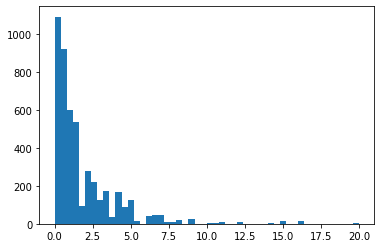

import pandasInstrumental variables
Functions and Loops
Go back to the first notebook. Learn how to write functions and loops.
fname = "dataset.csv"
df = pandas.read_csv(fname)
display(df.describe())
df| gdp | date | |
|---|---|---|
| count | 4.000000 | 4.00000 |
| mean | 552.500000 | 2000.50000 |
| std | 519.623261 | 0.57735 |
| min | 100.000000 | 2000.00000 |
| 25% | 103.750000 | 2000.00000 |
| 50% | 552.500000 | 2000.50000 |
| 75% | 1001.250000 | 2001.00000 |
| max | 1005.000000 | 2001.00000 |
| country | gdp | date | |
|---|---|---|---|
| 0 | usa | 1000 | 2000 |
| 1 | usa | 1005 | 2001 |
| 2 | france | 100 | 2000 |
| 3 | france | 105 | 2001 |
def import_and_print(fname, print_statistics=True):
# here is the body of the function
df = pandas.read_csv(fname)
if print_statistics==True:
display("Summary Statistics")
display(df.describe())
return dfimport_and_print("dataset.csv")'Summary Statistics'| gdp | date | |
|---|---|---|
| count | 4.000000 | 4.00000 |
| mean | 552.500000 | 2000.50000 |
| std | 519.623261 | 0.57735 |
| min | 100.000000 | 2000.00000 |
| 25% | 103.750000 | 2000.00000 |
| 50% | 552.500000 | 2000.50000 |
| 75% | 1001.250000 | 2001.00000 |
| max | 1005.000000 | 2001.00000 |
| country | gdp | date | |
|---|---|---|---|
| 0 | usa | 1000 | 2000 |
| 1 | usa | 1005 | 2001 |
| 2 | france | 100 | 2000 |
| 3 | france | 105 | 2001 |
import_and_print("dataset_2.csv", False)| country | gdp | date | |
|---|---|---|---|
| 0 | usa | 1000 | 2000 |
| 1 | usa | 1005 | 2001 |
| 2 | france | 100 | 2000 |
| 3 | france | 105 | 2001 |
def f(x): # no side effect
return x**2 + 1import timedef g(x): # that one has side effects
print("Calculating...")
time.sleep(10)
return x**2 + 1g(1)Calculating...2def h(x): # that one has only side effects
print("Calculating...")
time.sleep(10)
y = x**2 + 1
print(f"Found it! {y}")h(1)Calculating...
Found it! 2Documenting code:
- adding comments:
# ... - add docstrings: just after the function name, a string explaining what the function does
def import_and_print(fname, print_statistics=True):
"Import a dataframe from a filename, print the main statistics and return the dataframe."
# import the file to get a dataframe
df = pandas.read_csv(fname)
if print_statistics==True:
display("Summary Statistics")
# we print default summary statistics computed by pandas
display(df.describe())
return dfimport_and_print?Signature: import_and_print(fname, print_statistics=True) Docstring: Import a dataframe from a filename, print the main statistics and return the dataframe. File: ~/Teaching/dbe/session_6/<ipython-input-32-fb18d0d82cec> Type: function
def import_and_print(fname, print_statistics=True):
"""Import a dataframe from a filename.
fname (string): filename
print_statistics (boolean): if True print summary statistics
"""
# import the file to get a dataframe
df = pandas.read_csv(fname)
if print_statistics==True:
display("Summary Statistics")
# we print default summary statistics computed by pandas
display(df.describe())
return dfimport_and_print?Signature: import_and_print(fname, print_statistics=True) Docstring: Import a dataframe from a filename. fname (string): filename print_statistics (boolean): if True print summary statistics File: ~/Teaching/dbe/session_6/<ipython-input-35-97c3580f10df> Type: function
(lambda x: x**2-1) (3)8f = (lambda x: x**2-1)
f(3)8## anonymous functions are useful for the groupby pandas functiondf| country | gdp | date | |
|---|---|---|---|
| 0 | usa | 1000 | 2000 |
| 1 | usa | 1005 | 2001 |
| 2 | france | 100 | 2000 |
| 3 | france | 105 | 2001 |
# naive approach
l = []
for country in df["country"].unique():
print(f"Selecting country {country}")
sel = df["country"]==country
sdf = df[sel] # sub dataframe with the right country
print( sdf.mean() )
l.append(df_s.mean())Selecting country usa
gdp 1002.5
date 2000.5
dtype: float64
Selecting country france
gdp 102.5
date 2000.5
dtype: float64def todo(sdf): print( sdf.mean())df.groupby("country").apply( todo ) gdp 102.5
date 2000.5
dtype: float64
gdp 1002.5
date 2000.5
dtype: float64df.groupby("country").apply( lambda sdf: (sdf.mean()) )| gdp | date | |
|---|---|---|
| country | ||
| france | 102.5 | 2000.5 |
| usa | 1002.5 | 2000.5 |
Baby example on mock dataset
Constructing the dataset
Create four random series of length \(N=1000\)
- \(x\): education
- \(y\): salary
- \(z\): ambition
- \(q\): early smoking
such that:
- \(x\) and \(z\) cause \(y\)
- \(z\) causes \(x\)
- \(q\) is correlated with \(x\), not with \(z\)
(all relations are linear, add random shocks where needed)
Create a dataset df
import numpyN = 100000ϵ_z = numpy.random.randn(N)*0.01
ϵ_x = numpy.random.randn(N)*0.01
ϵ_q = numpy.random.randn(N)*0.01
ϵ_y = numpy.random.randn(N)*0.01z = 0.1 + ϵ_z
x = 0.1 + z + ϵ_x
q = 0.5 + 0.1234*ϵ_x + ϵ_q
y = 1.0 + 0.9*x + 0.4*z + ϵ_ydf = pandas.DataFrame({
"x": x,
"y": y,
"z": z,
"q": q
})df.corr()| x | y | z | q | |
|---|---|---|---|---|
| x | 1.000000 | 0.831152 | 0.708497 | 0.079905 |
| y | 0.831152 | 1.000000 | 0.694133 | 0.054070 |
| z | 0.708497 | 0.694133 | 1.000000 | -0.006022 |
| q | 0.079905 | 0.054070 | -0.006022 | 1.000000 |
Naive approach
Run a regression to estimate the effect of \(x\) on \(y\). Control by \(z\). What happens ?
import linearmodels
from statsmodels.formula import apimodel = api.ols("y ~ x", df)
res = model.fit()
res.summary()| Dep. Variable: | y | R-squared: | 0.691 |
|---|---|---|---|
| Model: | OLS | Adj. R-squared: | 0.691 |
| Method: | Least Squares | F-statistic: | 2.234e+05 |
| Date: | Wed, 09 Mar 2022 | Prob (F-statistic): | 0.00 |
| Time: | 12:14:59 | Log-Likelihood: | 3.1488e+05 |
| No. Observations: | 100000 | AIC: | -6.298e+05 |
| Df Residuals: | 99998 | BIC: | -6.297e+05 |
| Df Model: | 1 | ||
| Covariance Type: | nonrobust |
| coef | std err | t | P>|t| | [0.025 | 0.975] | |
|---|---|---|---|---|---|---|
| Intercept | 1.0005 | 0.000 | 2150.251 | 0.000 | 1.000 | 1.001 |
| x | 1.0974 | 0.002 | 472.679 | 0.000 | 1.093 | 1.102 |
| Omnibus: | 2.727 | Durbin-Watson: | 1.991 |
|---|---|---|---|
| Prob(Omnibus): | 0.256 | Jarque-Bera (JB): | 2.727 |
| Skew: | 0.008 | Prob(JB): | 0.256 |
| Kurtosis: | 3.019 | Cond. No. | 73.5 |
Notes:
[1] Standard Errors assume that the covariance matrix of the errors is correctly specified.
model = api.ols("y ~ x + z", df)
res = model.fit()
res.summary()| Dep. Variable: | y | R-squared: | 0.713 |
|---|---|---|---|
| Model: | OLS | Adj. R-squared: | 0.713 |
| Method: | Least Squares | F-statistic: | 1.243e+05 |
| Date: | Wed, 09 Mar 2022 | Prob (F-statistic): | 0.00 |
| Time: | 12:15:00 | Log-Likelihood: | 3.1862e+05 |
| No. Observations: | 100000 | AIC: | -6.372e+05 |
| Df Residuals: | 99997 | BIC: | -6.372e+05 |
| Df Model: | 2 | ||
| Covariance Type: | nonrobust |
| coef | std err | t | P>|t| | [0.025 | 0.975] | |
|---|---|---|---|---|---|---|
| Intercept | 1.0007 | 0.000 | 2232.389 | 0.000 | 1.000 | 1.002 |
| x | 0.8997 | 0.003 | 283.880 | 0.000 | 0.893 | 0.906 |
| z | 0.3938 | 0.004 | 88.054 | 0.000 | 0.385 | 0.403 |
| Omnibus: | 2.380 | Durbin-Watson: | 1.990 |
|---|---|---|---|
| Prob(Omnibus): | 0.304 | Jarque-Bera (JB): | 2.379 |
| Skew: | 0.007 | Prob(JB): | 0.304 |
| Kurtosis: | 3.019 | Cond. No. | 166. |
Notes:
[1] Standard Errors assume that the covariance matrix of the errors is correctly specified.
Instrumental variable
Use \(q\) to instrument the effect of x on y. Comment.
# difference between linearmodels and statsmodels:
# linearmodels does not include the constant by defulatfrom linearmodels import IV2SLSfrom linearmodels import IV2SLS
formula = (
"y ~ 1 + [x ~ q]"
)
mod = IV2SLS.from_formula(formula, df)
res = mod.fit()
res| Dep. Variable: | y | R-squared: | 0.6670 |
|---|---|---|---|
| Estimator: | IV-2SLS | Adj. R-squared: | 0.6669 |
| No. Observations: | 100000 | F-statistic: | 883.43 |
| Date: | Wed, Mar 09 2022 | P-value (F-stat) | 0.0000 |
| Time: | 12:15:00 | Distribution: | chi2(1) |
| Cov. Estimator: | robust | ||
| Parameter | Std. Err. | T-stat | P-value | Lower CI | Upper CI | |
|---|---|---|---|---|---|---|
| Intercept | 1.0413 | 0.0060 | 173.27 | 0.0000 | 1.0295 | 1.0531 |
| x | 0.8934 | 0.0301 | 29.723 | 0.0000 | 0.8345 | 0.9523 |
Endogenous: x
Instruments: q
Robust Covariance (Heteroskedastic)
Debiased: False
id: 0x7f09adece490
Return on Education
We follow the excellent R tutorial from the (excellent) Econometrics with R book.
The goal is to measure the effect of schooling on earnings, while correcting the endogeneity bias by using distance to college as an instrument.
Download the college distance and make a nice dataframe. Describe the dataset. Plot an histogram of distance.
https://vincentarelbundock.github.io/Rdatasets/datasets.html
import statsmodels.api as smsm.datasets.get_rdataset?Signature: sm.datasets.get_rdataset(dataname, package='datasets', cache=False) Docstring: download and return R dataset Parameters ---------- dataname : str The name of the dataset you want to download package : str The package in which the dataset is found. The default is the core 'datasets' package. cache : bool or str If True, will download this data into the STATSMODELS_DATA folder. The default location is a folder called statsmodels_data in the user home folder. Otherwise, you can specify a path to a folder to use for caching the data. If False, the data will not be cached. Returns ------- dataset : Dataset A `statsmodels.data.utils.Dataset` instance. This objects has attributes: * data - A pandas DataFrame containing the data * title - The dataset title * package - The package from which the data came * from_cache - Whether not cached data was retrieved * __doc__ - The verbatim R documentation. Notes ----- If the R dataset has an integer index. This is reset to be zero-based. Otherwise the index is preserved. The caching facilities are dumb. That is, no download dates, e-tags, or otherwise identifying information is checked to see if the data should be downloaded again or not. If the dataset is in the cache, it's used. File: ~/.local/opt/miniconda/lib/python3.8/site-packages/statsmodels/datasets/utils.py Type: function
ds = sm.datasets.get_rdataset("CollegeDistance", "AER")df = ds.datads.title'College Distance Data'df.head()| gender | ethnicity | score | fcollege | mcollege | home | urban | unemp | wage | distance | tuition | education | income | region | |
|---|---|---|---|---|---|---|---|---|---|---|---|---|---|---|
| 1 | male | other | 39.150002 | yes | no | yes | yes | 6.2 | 8.09 | 0.2 | 0.88915 | 12 | high | other |
| 2 | female | other | 48.869999 | no | no | yes | yes | 6.2 | 8.09 | 0.2 | 0.88915 | 12 | low | other |
| 3 | male | other | 48.740002 | no | no | yes | yes | 6.2 | 8.09 | 0.2 | 0.88915 | 12 | low | other |
| 4 | male | afam | 40.400002 | no | no | yes | yes | 6.2 | 8.09 | 0.2 | 0.88915 | 12 | low | other |
| 5 | female | other | 40.480000 | no | no | no | yes | 5.6 | 8.09 | 0.4 | 0.88915 | 13 | low | other |
# wage looks constant. Check there is actually some variability
df.describe()| score | unemp | wage | distance | tuition | education | |
|---|---|---|---|---|---|---|
| count | 4739.000000 | 4739.000000 | 4739.000000 | 4739.000000 | 4739.000000 | 4739.000000 |
| mean | 50.889029 | 7.597215 | 9.500506 | 1.802870 | 0.814608 | 13.807765 |
| std | 8.701910 | 2.763581 | 1.343067 | 2.297128 | 0.339504 | 1.789107 |
| min | 28.950001 | 1.400000 | 6.590000 | 0.000000 | 0.257510 | 12.000000 |
| 25% | 43.924999 | 5.900000 | 8.850000 | 0.400000 | 0.484990 | 12.000000 |
| 50% | 51.189999 | 7.100000 | 9.680000 | 1.000000 | 0.824480 | 13.000000 |
| 75% | 57.769999 | 8.900000 | 10.150000 | 2.500000 | 1.127020 | 16.000000 |
| max | 72.809998 | 24.900000 | 12.960000 | 20.000000 | 1.404160 | 18.000000 |
from matplotlib import pyplot as pltplt.hist(df['distance'], bins=50)(array([1091., 923., 601., 534., 92., 277., 219., 126., 173.,
36., 168., 88., 126., 17., 0., 43., 47., 48.,
10., 8., 19., 0., 26., 0., 0., 6., 4.,
7., 0., 0., 10., 0., 0., 0., 0., 4.,
0., 15., 0., 0., 17., 0., 0., 0., 0.,
0., 0., 0., 0., 4.]),
array([ 0. , 0.4, 0.8, 1.2, 1.6, 2. , 2.4, 2.8, 3.2, 3.6, 4. ,
4.4, 4.8, 5.2, 5.6, 6. , 6.4, 6.8, 7.2, 7.6, 8. , 8.4,
8.8, 9.2, 9.6, 10. , 10.4, 10.8, 11.2, 11.6, 12. , 12.4, 12.8,
13.2, 13.6, 14. , 14.4, 14.8, 15.2, 15.6, 16. , 16.4, 16.8, 17.2,
17.6, 18. , 18.4, 18.8, 19.2, 19.6, 20. ]),
<BarContainer object of 50 artists>)
Run the naive regression \(income=\beta_0 + \beta_1 \text{education} + u\)
import statsmodels.formula.api as apiapi.ols("C(income) ~ education", df)ValueError: endog has evaluated to an array with multiple columns that has shape (4739, 2). This occurs when the variable converted to endog is non-numeric (e.g., bool or str).# education variable takes string values ("high" or "low").
# we need to convert them into 1 and 0 first
df['income_binary'] = (df['income'] == "high")*1model = api.ols("income_binary ~ education", df)
result = model.fit()result.summary()| Dep. Variable: | income_binary | R-squared: | 0.048 |
|---|---|---|---|
| Model: | OLS | Adj. R-squared: | 0.048 |
| Method: | Least Squares | F-statistic: | 239.0 |
| Date: | Tue, 15 Mar 2022 | Prob (F-statistic): | 1.22e-52 |
| Time: | 09:34:48 | Log-Likelihood: | -2853.5 |
| No. Observations: | 4739 | AIC: | 5711. |
| Df Residuals: | 4737 | BIC: | 5724. |
| Df Model: | 1 | ||
| Covariance Type: | nonrobust |
| coef | std err | t | P>|t| | [0.025 | 0.975] | |
|---|---|---|---|---|---|---|
| Intercept | -0.4780 | 0.050 | -9.567 | 0.000 | -0.576 | -0.380 |
| education | 0.0555 | 0.004 | 15.460 | 0.000 | 0.048 | 0.063 |
| Omnibus: | 1510.859 | Durbin-Watson: | 1.791 |
|---|---|---|---|
| Prob(Omnibus): | 0.000 | Jarque-Bera (JB): | 795.036 |
| Skew: | 0.871 | Prob(JB): | 2.29e-173 |
| Kurtosis: | 2.003 | Cond. No. | 109. |
Notes:
[1] Standard Errors assume that the covariance matrix of the errors is correctly specified.
The p-value associated to the Fisher statistics is negligible: the model is globally significant. Predictive power is very low (R^2 ~ 5%): the effect of education on income is small w.r.t. to the effect of other factors.
Coefficients for interecept and education terms are significant at the 0.1% threshold.
df.head()| gender | ethnicity | score | fcollege | mcollege | home | urban | unemp | wage | distance | tuition | education | income | region | income_binary | |
|---|---|---|---|---|---|---|---|---|---|---|---|---|---|---|---|
| 1 | male | other | 39.150002 | yes | no | yes | yes | 6.2 | 8.09 | 0.2 | 0.88915 | 12 | high | other | 1 |
| 2 | female | other | 48.869999 | no | no | yes | yes | 6.2 | 8.09 | 0.2 | 0.88915 | 12 | low | other | 0 |
| 3 | male | other | 48.740002 | no | no | yes | yes | 6.2 | 8.09 | 0.2 | 0.88915 | 12 | low | other | 0 |
| 4 | male | afam | 40.400002 | no | no | yes | yes | 6.2 | 8.09 | 0.2 | 0.88915 | 12 | low | other | 0 |
| 5 | female | other | 40.480000 | no | no | no | yes | 5.6 | 8.09 | 0.4 | 0.88915 | 13 | low | other | 0 |
df['ethnicity'].unique()array(['other', 'afam', 'hispanic'], dtype=object)Augment the regression with unemp, hispanic, af-am, female and urban
from patsy import Treatmentmodel = api.ols("income_binary ~ education + C(gender,Treatment(reference='male')) + C(ethnicity,Treatment(reference='other')) + urban + unemp", df)
result = model.fit()result.summary()| Dep. Variable: | income_binary | R-squared: | 0.083 |
|---|---|---|---|
| Model: | OLS | Adj. R-squared: | 0.082 |
| Method: | Least Squares | F-statistic: | 71.34 |
| Date: | Tue, 15 Mar 2022 | Prob (F-statistic): | 2.00e-85 |
| Time: | 09:51:02 | Log-Likelihood: | -2764.9 |
| No. Observations: | 4739 | AIC: | 5544. |
| Df Residuals: | 4732 | BIC: | 5589. |
| Df Model: | 6 | ||
| Covariance Type: | nonrobust |
| coef | std err | t | P>|t| | [0.025 | 0.975] | |
|---|---|---|---|---|---|---|
| Intercept | -0.2433 | 0.054 | -4.528 | 0.000 | -0.349 | -0.138 |
| C(gender, Treatment(reference='male'))[T.female] | -0.0490 | 0.013 | -3.861 | 0.000 | -0.074 | -0.024 |
| C(ethnicity, Treatment(reference='other'))[T.afam] | -0.1235 | 0.018 | -6.920 | 0.000 | -0.159 | -0.089 |
| C(ethnicity, Treatment(reference='other'))[T.hispanic] | -0.1532 | 0.017 | -9.197 | 0.000 | -0.186 | -0.121 |
| urban[T.yes] | -0.0470 | 0.015 | -3.073 | 0.002 | -0.077 | -0.017 |
| education | 0.0511 | 0.004 | 14.422 | 0.000 | 0.044 | 0.058 |
| unemp | -0.0115 | 0.002 | -5.006 | 0.000 | -0.016 | -0.007 |
| Omnibus: | 1212.294 | Durbin-Watson: | 1.836 |
|---|---|---|---|
| Prob(Omnibus): | 0.000 | Jarque-Bera (JB): | 697.989 |
| Skew: | 0.813 | Prob(JB): | 2.71e-152 |
| Kurtosis: | 2.055 | Cond. No. | 136. |
Notes:
[1] Standard Errors assume that the covariance matrix of the errors is correctly specified.
Comment the results and explain the selection problem
All coefficients are significant at the 1% level. Prediction power is higher : R^2 about 8%.
Explain why distance to college might be used to instrument the effect of schooling.
We need an instrument that:
- is correlated with schooling:
- distance to college affects chances to go to university hence schooling
- independent from other factors (gender, ethnicity, …)
The effect of “distance to college” on income, is only through its effect on education.
Run an IV regression, where distance is used to instrument schooling.
look at: https://bashtage.github.io/linearmodels/ (two-stage least squares)
# remember that linearmodels does not include constants by default
# we take the same formula and add the constantfrom linearmodels import IV2SLS
formula = (
"income_binary ~ 1 + [education~distance] + C(gender,Treatment(reference='male')) + C(ethnicity,Treatment(reference='other')) + urban + unemp"
)
mod = IV2SLS.from_formula(formula, df)
res = mod.fit()
res| Dep. Variable: | income_binary | R-squared: | -0.2734 |
|---|---|---|---|
| Estimator: | IV-2SLS | Adj. R-squared: | -0.2750 |
| No. Observations: | 4739 | F-statistic: | 213.68 |
| Date: | Tue, Mar 15 2022 | P-value (F-stat) | 0.0000 |
| Time: | 10:12:51 | Distribution: | chi2(6) |
| Cov. Estimator: | robust | ||
| Parameter | Std. Err. | T-stat | P-value | Lower CI | Upper CI | |
|---|---|---|---|---|---|---|
| Intercept | -2.3763 | 0.5316 | -4.4699 | 0.0000 | -3.4182 | -1.3343 |
| C(gender, Treatment(reference='male'))[T.female] | -0.0456 | 0.0150 | -3.0301 | 0.0024 | -0.0750 | -0.0161 |
| C(ethnicity, Treatment(reference='other'))[T.afam] | -0.0456 | 0.0283 | -1.6123 | 0.1069 | -0.1011 | 0.0098 |
| C(ethnicity, Treatment(reference='other'))[T.hispanic] | -0.1075 | 0.0223 | -4.8322 | 0.0000 | -0.1511 | -0.0639 |
| urban[T.yes] | -0.0527 | 0.0182 | -2.8947 | 0.0038 | -0.0884 | -0.0170 |
| unemp | -0.0101 | 0.0027 | -3.7771 | 0.0002 | -0.0153 | -0.0048 |
| education | 0.2032 | 0.0378 | 5.3800 | 0.0000 | 0.1292 | 0.2773 |
Endogenous: education
Instruments: distance
Robust Covariance (Heteroskedastic)
Debiased: False
id: 0x7f3f2323f0d0
Comment the results. Compare with the R tutorials.
R^2 is negative, but we can’t compare it with the non-IV regression.
All coefficients are significant at the 1% level, save for ethnicity (for category “afam”). With the instrumentation strategy, the effect of education on salary, is 4 times higher than without it.